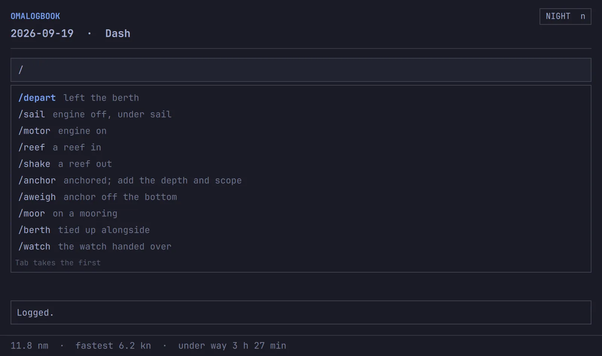

The ship's logearlyMIT
omalogbook
It keeps the watch while you sail: a position every hour, the day's run, and a GPX track for every passage. Write a note and it lands with the time and the spot on the chart. The whole log is a folder of markdown you own — no database, no server, and no need for omalogbook to read it again.
What it writes
- A day at a time, one markdown note each, with the day's run, fastest speed and time under way in the front matter.
- A GPX track for every passage — the format every chartplotter and mapping site already reads.
- Your notes, where you wrote them. An entry carries the time and the boat's position, from the same GPS the chartplotter draws.
- Your writing, left alone. omalogbook owns one block in each note. Your prose, your headings and any front matter you add are copied through untouched, and a total you correct by hand stands.
- Committed as it goes, and pushed when there's a connection. Offshore there won't be one for weeks, which is not an error.
- The log
~/Logbook/2026/09/2026-09-19.md- A note
- 23:08 · 37°52.0′N 122°18.9′W — Dolphins off the port bow
- Under way
- above 1.0 kn; still below 0.5 for 5 min
- Keys
- Enter files, Tab takes a mark, n Night Watch, Esc backs out
Marks
Some moments are worth more than prose. A line that opens with a mark is filed as an event, with the course and speed you were making and what it was blowing at the time.

/anchor 25 ft, 5:1 scope keeps the words you add after it.A mark says what the log can't work out for itself. under way and stopped come from a speed threshold, and a threshold can't tell anchored from moored from tied up alongside. You can.
The weather on a mark is two different things, and the log never blurs them. wind … (HRRR) is omawind's forecast worked out at the boat — a model's opinion, and the only source of a barometer reading. measured … is an anemometer that really measured that wind, at a named NOAA station within 10 nautical miles, with the age of its report. Reading a log back, the difference matters.
Putting an entry right
Click an entry and its words come up in the line for editing. STRIKE rules through it instead, which is what a paper log does: the entry happened and was withdrawn, and that reads back as more honest than a line that was quietly never there. omalogbook strike 3 --erase takes one out altogether, for when that is truly what you mean.
The clock and the fix are never rewritten. A log is a record of where the boat was and when, and omalogbook will not put different numbers there.
How it works
omalogbook writes; omakeel listens. The hub decodes the GPS and keeps the boat's fix; omalogbook follows its socket, works out when a passage starts and ends, and writes the note and the track. The window is a second face on the same thing — it reads the day through omalogbook itself and files by calling it, so a note typed on watch and one typed in a terminal are the same note.
Nothing here needs a database or a server. The vault is an ordinary folder, so Obsidian opens it as a vault and Neovim opens it as files, and omalogbook path prints today's note for a keybinding.
Install
Omarchy on x86_64 or aarch64, with omakeel running on your GPS:
$ cargo install --git https://github.com/shieldsworks/omalogbook --locked $ omalogbook run
Settings live in ~/.config/omalogbook/config.toml and every one is optional: where the vault is, the boat's name, how often to log a position, and what counts as under way. Make the vault a git repo and omalogbook commits as it writes.
Not yet
- It has not kept a log at sea for a season. The recording above is an invented day.
- Weather beyond wind and pressure: no air or water temperature, sky, visibility or sea state, until the boat has instruments to read them from.
- Routes, which omahelm doesn't have yet. Tracks are recorded now.
- Engine hours, fuel and tanks belong to omabosun; an anchor watch will come from omanchor rather than be guessed at from speed.
A log is a record of where you were
Night by night, at what time, for as long as you keep it. Keep your own vault private, and think before you publish a track.